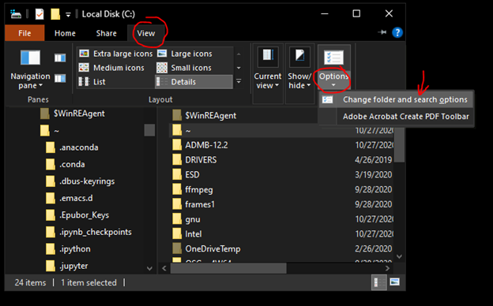
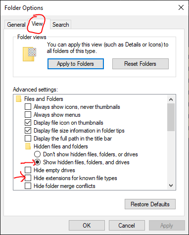
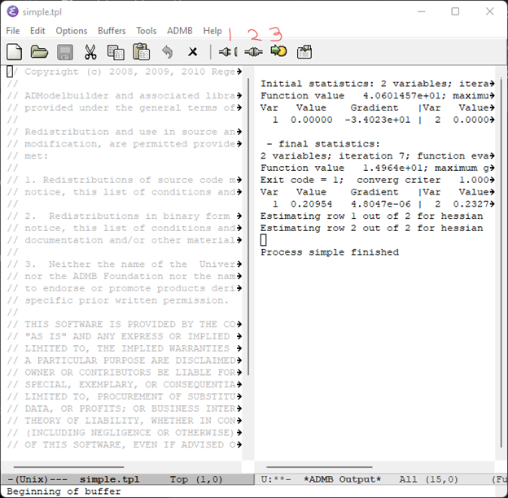
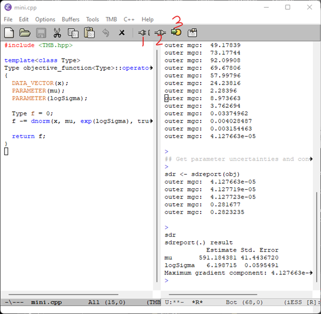

ADMB/TMB Full Installation for Windows
Author
Charlie Belinsky
Quantitative Fisheries Center
Michigan State University
belinsky@msu.edu
517-355-0126
Note: Mac installation of this software is much more involved – contact Charlie for instructions.
The project is maintained on Github.
Overview
These procedures in the document install the following software and was tested on 8/30/22:
- R 4.2.1
- Rtools 4.2 (for the CPP compilers)
- RStudio 2022.07.1 Build 554
- TMB package for R 1.9.1
- ADMB 13.0
- Emacs 27.2 (Emacs version 28 does not work)
- Emacs configuration files
- These files provide the syntax highlighting in Emacs for both ADMB and TMB and set up the Environment
- admb2r.cpp in the ADMB folder
Admin access to your computer
The installation procedures will do the following that might require administrative access to your computer:
- Install programs (R, RStudio, Rtools, ADMB, Emacs)
- Install programs directly to the C: drive (ADMB, RTools)
- Change the User Environment variables (PATH.bat)
- Install programs not validated by Microsoft (ADMB)
- Run a batch file (PATH.bat)
Future updates
I do not believe that the User Environment PATH variable need to be added anymore as I put this functionality in the emacs configuration files. However, this has not been fully tested out. There is still a chance that the User Environment PATH has been set by a previously installed program and that PATH could interfere with ADMB and TMB's operation. Looking at the User Environment PATH would be my first troubleshooting step.
Viewing hidden files and extensions in Windows
This is useful for this installation and for any programming you do on your computer.
Note: images in this document can be resized by clicking on them
1) Open a File Explorer window and in...
Windows 10: Click View -> Options -> Change folder and search options

Accessing folder options in Windows 10
Windows 11: click 3 dots ( … ) -> Options

Accessing folder options in Windows 11
2) Both Windows 10 and 11:
-
- Click View tab
- Check Show hidden files…
- Uncheck Hide extensions for known file types
- click OK

Showing hidden files and hiding extensions
Software Installation
You can use the default installation options for all applications.
Steps 1, 3, and 4 are only needed for TMB, and Step 5 is only needed for ADMB. All other steps are required for both ADMB and TMB.
- Download and Install R (you need to have at least version 4.2)
- Download and install Rtools42 (you need to have at least version 42, which is the latest as of this writing)
- Click on Rrools42 Installer in Installing Rtools42 section
- Download and install RStudio (you need to have a version from 2022 or later)
- Open RStudio and install the TMB package
- In RStudio: Tools -> Install Packages… -> type TMB in Packages textbox -> Install
- Close RStudio after installing package
- Download and install ADMB-13.0-windows.exe
-
- Alternatively, you can download ADMB-12.3-windows.exe (under Windows header)
- When installing, you will likely get a Windows protected your PC screen, if so:
-
-
-
- click More info
- click Run anyway
- Download and install emacs-27.2-x86_64-installer.exe
- Go to ADMB-TMB-Install GitHub page
- Click on green Code button and choose Download Zip
- This will download a zipped file named ADMB-TMB-Install-main.zip
- Unzip ADMB-TMB-Install-main.zip (right-click, Extract All), which contains:
- An executable file called PATH.bat
- A folder called emacsConfigFiles that gets installed to the emacs folder when PATH.bat is executed
- A folder called Examples, which contains ADMB and TMB scripts that are used in this document to test the installation.
- admb2r.cpp -- a commonly used script file that's not included with ADMB
- Execute (double-click) Path.bat
- You will likely get a Windows protected your PC screen, if so:
-
-
-
-
- click More info
- click Run anyway
- Restart computer
- As far as I know, this step is not needed -- but I keep it here just to be safe.
Have Emacs open TPL files by default
- Right-click on any *.tpl file
- Choose Open With
- Windows 10:
- At bottom, click Choose an app on your PC
- The Path is: C:\Program Files\Emacs\x86_64\bin\runemacs.exe
- Click Open
- Click Always
- Windows 11:
- go to bottom and click on More Apps
- At bottom, click Look for another app on this PC
- The Path is: C:\Program Files\Emacs\x86_64\bin\runemacs.exe
- Click OK
Note: the same procedures will work for CPP files
Testing out ADMB
- In folder you just unzipped, double-click emacs -> examples -> simple -> simple.tpl
- Open simple.tpl in Emacs
- Click Translate (button 1), Build (button 2), and Run (button 3)
- Make sure you wait for steps to complete
- If the Emacs panels look like this after Run, then ADMB is properly installed:

Translate, Build, and Run buttons in ADMB. This view is from ADMB 12.3 -- the view from 13.0 is a bit different
Testing out TMB
- In folder you just unzipped, double-click emacs -> examples -> mini -> mini.cpp
- Open mini.cpp in Emacs
- Click Clean (button 1), Compile (button 2), and Run (button 3)
- Make sure you wait for each step to complete
- Compile take a minute or two
- If the Emacs panels look like this after Run, then TMB is properly installed:

Clean, Compile, and Run buttons in TMB
Appendix 1: manually copy configuration files and admb2r.cpp
PATH.bat is a batch that copies the emacs configuration files and admb2r.cpp to the correct locations.
The following are instruction to manually copy the files -- this is only needed if PATH.bat does not work.
Copy emacs configuration files
Inside ADMB-TMB-Install-main, there is a folder named emacsConfigFiles. You need to copy the contents inside the emacsConfigFiles folder (a file named .emacs and a folder named emacs) to the user’s appdata folder.
The easiest way to get to the user's appdata folder is to type %appdata% in a File Explorer window and hit enter. Or, you can go directly to the folder: C:\Users\<yourUserName>\AppData\Roaming. Move both the emacs folder and .emacs file to this folder:

Location to copy the emacs configuration files
Copy admb2r.cpp
The file admb2r.cpp is used in ADMB scripts but it does not come with ADMB.
You can add it to ADMB by copying admb2r.cpp from the ADMB-TMB-Install-main folder to the following locations:
- c:\ADMB-13.0\include
- c:\ADMB-13.0\include\contrib (I am not sure it is necessary to copy it here)
Note: If you are using a different version of ADMB then replace 13.0 with the version you are using